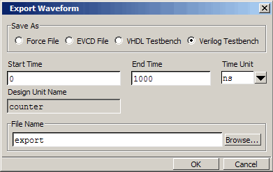

At
this point you can run the simulation or you can export the created
waveforms to one of four stimulus file formats. You will run the
simulation in a minute but first export the created waveforms so
you can use them later in the lesson.
Procedure
- Export
the created waveforms in an HDL test bench format.
- Select .
- Select Verilog
Testbench (or VHDL Testbench if
you are using the VHDL sample files).
- Enter
“1000” for End Time if necessary.
- Type
“export” in the File Name field and click OK (Figure 1).
Figure 1. The Export Waveform
Dialog Box
Questa SIM creates a file
named export.v (or export.vhd)
in the current directory. Later in the lesson we will compile and
simulate the file.
- Export
the created waveforms in an extended VCD format.
- Select .
- Select EVCD
File.
- Enter
“1000” for End Time if necessary and click OK.
Questa SIM creates an extended
VCD file named export.vcd. We will import this
file later in the lesson.